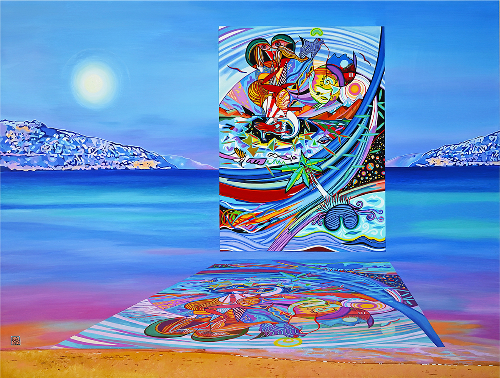

Details
Vernissage: Mittwoch, den 28. Juni 2023
Einführende Worte: Dr. Karl DANTENDORFER
Die Ausstellung war bis Ende August 2023 zu besuchen.

Vernissage: Mittwoch, den 28. Juni 2023
Einführende Worte: Dr. Karl DANTENDORFER
Die Ausstellung war bis Ende August 2023 zu besuchen.